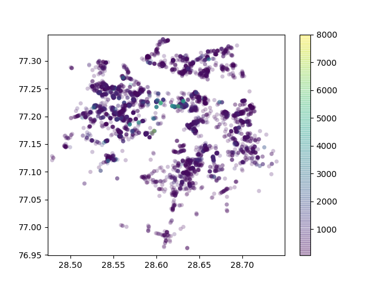
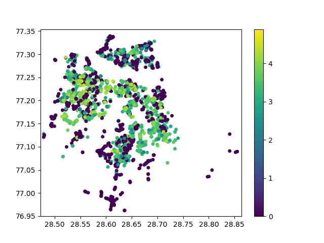

Cost for 2 at Restaurants in Delhi

The chart above is an overlay of the map of Delhi and shows the cost for a meal for 2 people each restaurant.
Zomato User Rating of Restaurants in Delhi

This chart is again an overlay of the map of Delhi and shows the Zomato ratings given by users to each restaurant.